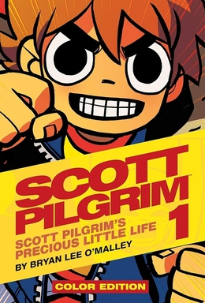
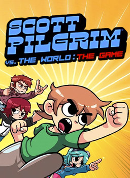
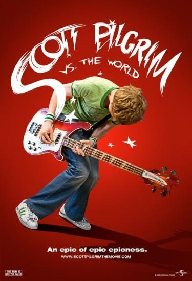
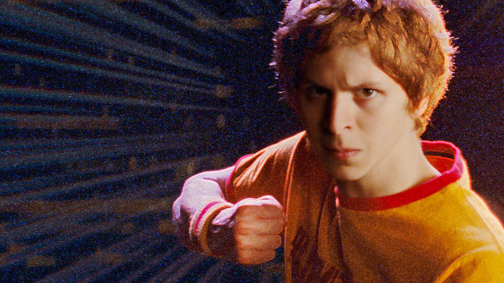
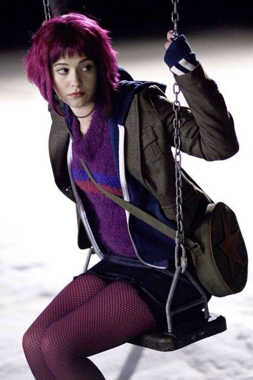
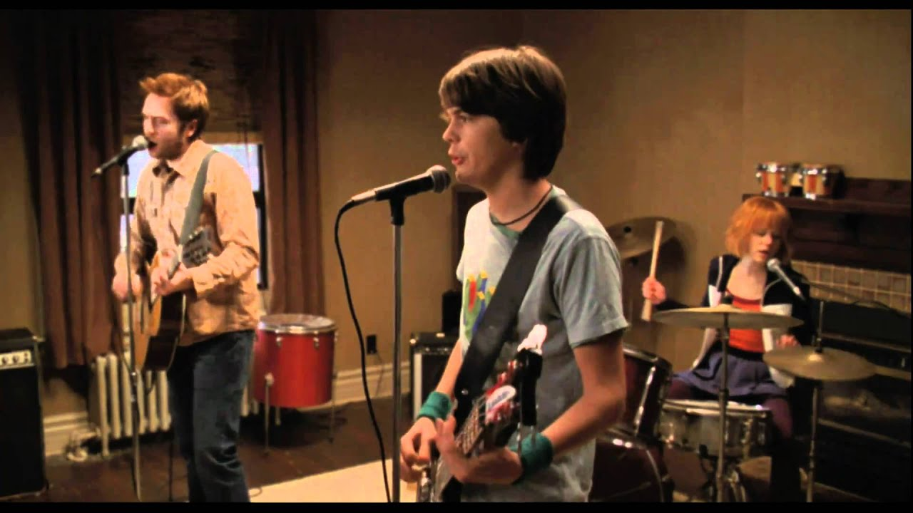

Es una película de ciencia ficción que relata la historia de un chico que pelea contra las exparejas de la chica de sus sueños para poder tenerla.
Historia
La película combina elementos de comedia, acción y romance, y está llena de referencias a la cultura pop y los videojuegos. A lo largo de la historia, Scott y sus amigos se embarcan en una aventura llena de desafíos y descubrimientos, mientras Scott lucha por ganar el corazón de Ramona y encontrar su propio camino en la vida.
La película fue elogiada por su estilo único y su representación creativa de los personajes. Ya que esta adapta la historia escrita por Bryan Lee O'Malley.
Sinopsis
Cómic
Scott Pilgrim
Es una serie de cómics creada por Bryan Lee O'Malley que sigue las aventuras de Scott Pilgrim, un joven músico que debe enfrentarse a los exnovios malvados de su novia Ramona Flowers para poder estar con ella. La historia combina elementos de romance, comedia y acción, y ha sido adaptada en una película y un videojuego.

Videojuego 1
Scott Pilgrim vs. The World: The Game
Es un videojuego de acción y aventura basado en la película. En el juego, los jugadores controlan a Scott Pilgrim mientras lucha contra sus exnovios en una serie de batallas épicas.

Película
Scott Pilgrim vs. The World: The movie
Es una película de acción y comedia basada en la serie de cómics. La película sigue a Scott Pilgrim mientras lucha contra los exnovios de su novia Ramona Flowers para poder estar con ella.

Serie
Scott Pilgrim: el anime
Es una serie de anime basada en la película y los cómics. La serie sigue a Scott Pilgrim mientras lucha contra los exnovios de su novia Ramona Flowers para poder estar con ella.
Videojuego 2
Scott Pilgrim EX
Es un videojuego de acción y aventura basado en la película y los cómics. En el juego, los jugadores controlan a Scott Pilgrim mientras lucha contra sus exnovios en una serie de batallas épicas.
Personajes
Scott Pilgrim
El personaje principal
Scott Pilgrim es el protagonista de la historia, un joven de 23 años que vive en Toronto y trabaja en una tienda de videojuegos.

Ramona Flowers
La novia de Scott
Ramona Flowers es la novia de Scott y la razón por la que se enfrenta a sus exnovios en una serie de batallas épicas.

Sex bob omb
La Banda de Scott
Sex Bob-omb es una banda de rock indie en la serie Scott Pilgrim. Sus integrantes son el antes mencionado Scott Pilgrim como bajista, Stephen Stills como guitarrista y vocalista y Kim Pine como baterista y quien da las pautas al inicio de cada canción. El nombre de la banda es una referencia doble a los Bob-omb, un enemigo recurrente en videojuegos de la saga Super Mario y además a la canción "Sex Bomb" de la banda Flipper o la canción "Sex Bomb" de Tom Jones. También es una referencia igualmente a la banda real llamada Sex Pistols.

Los Exes Malvados
Los exnovios de Ramona
Los Exes Malvados son los exnovios de Ramona Flowers, que Scott Pilgrim debe enfrentar en una serie de batallas épicas.